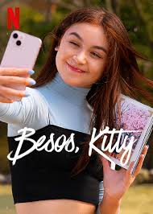

Descripción: *Besos Kitty* es un spin-off de *A Todos los Chicos de los que me Enamoré*, centrado en la historia de Kitty Song Covey. En esta serie, Kitty viaja a Corea para estudiar en la escuela donde su difunta madre asistió, con la esperanza de conectar con sus raíces y con su novio a distancia, pero descubrirá que el amor es más complicado de lo que pensaba.
